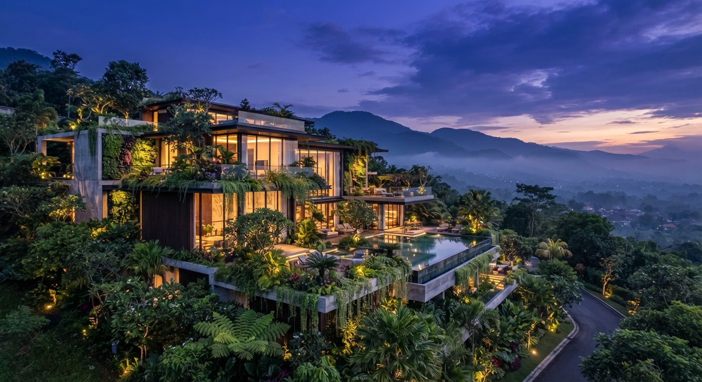

Архітектурна екосистема майбутнього |
Біофільна розкіш |
Еко-урбанізм |
Архітектура майбутнього |
Технологічний зв'язок із природою |
Інженерна досконалість |
Еко-урбанізм |
|
Концепція створення міських просторів та будівель, які не просто шкодять екології мінімально, а гармонійно зливаються з природою, оживають і дарують естетичну насолоду саме у вечірніх променях сонця. |
Сучасна вілла або комплекс із мінімалістичним дизайном, великою кількістю скла та терасами, які щедро засаджені живими рослинами, деревами й вертикальними садами. На задньому плані — легкий серпанок, м'яке світло вечірнього сонця і глибокі фіолетово-сині сутінки в небі, що перегукуються з вашою палітрою. |
 |
Позитивні сторони |
Негативні сторони |
Миттєвий емоційний гачок та вау-ефект:поєднання мінімалістичної розкоші та дикої природи на заході сонця виглядає дорого й кінематографічно. Це одразу чіпляє погляд і продає мрію про ідеальне, екологічне життя. Ідеальна візуальна підтримка бренду:глибокі фіолетово-сині сутінки в небі природним чином інтегрують вашу фірмову палітру (471852, 702D60), роблячи дизайн сайту цілісним і дорогим. Чітке зонування для тексту:темний фон неба і вечірнє освітлення створюють чудовий контраст для білого тексту і пошукового віджета на головному екрані — нічого не «зливається», читабельність на висоті. Трендовість:еко-біофільний дизайн і затишний урбанізм зараз на піку популярності серед ультрапреміальних покупців, які цінують приватність, здоров'я та сталий розвиток. |
Ризик нереалістичних очікувань (маркетинговий розрив):настільки ідеальні рендери чи фотографії задають дуже високу планку. Якщо реальний об'єкт будівництва виглядатиме дещо простіше, клієнт може відчути розчарування при детальному знайомстві. Складнощі з читаністю через перевантаженість деталями:якщо зелень на терасах, скло та складні архітектурні форми будуть занадто строкатими, на їхньому фоні може «губитися» інтерактивний віджет пошуку або текст заголовків. Потрібно буде обов'язково застосовувати легке затемнення (віньєтку) або розмиття. Вузька емоційна прив'язка до вечірнього часу:оскільки картинка завязана на сутінки й захід сонця, вона створює дещо «вечірню», камерну чи навіть драматичну атмосферу. Якщо весь сайт буде побудований виключно на темних сутінкових кадрах, це може втомлювати користувача при тривалому перегляді. |
Яку емоцію дає цей простір |
| Відчуття гармонії елітного житла з дикою природою.Елітна резиденція на зображенні сприймається не як холодний бетонний об'єкт, а як затишний притулок. Тепле світло з панорамних вікон у поєднанні з сутінковим прохолодним небом створює глибоке почуття захищеності, умиротворення та приватності серед безкраїх джунглів. Рясна тропічна зелень, каскади рослин на терасах і дикий туманний ліс навколо стирають кордон між урбаністичним комфортом і первісним комфортом. Це породжує почуття єднання з навколишнім світом, свободи і єдиного дихання з простором. Це ментальне уповільнення: відчуття зупиненого часу, розкоші тиші та абсолютного ментального балансу. |